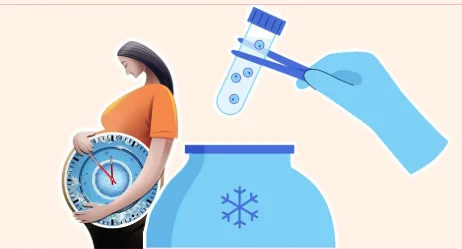

See your ovarian age, early enough to plan.
FertiClock is developing a finger-prick blood test that reads proteins linked to both the number and the quality of your eggs, and shows your ovarian age next to your real age, explained in plain language. A finger-prick blood test that reads proteins linked to both the number and the quality of your eggs, and shows your ovarian age next to your real age.
About 3 years ahead of your age. Worth discussing with your gynaecologist this year.
A guide for an informed conversation with your gynaecologist, not a prediction of whether you will conceive.
- One finger-prick blood sampleOne finger-prick sample
- Egg quantity and quality, togetherQuantity and quality, together
- Your result as an age range
- Explained, with a specialist if you want oneExplained, with a specialist
Motherhood is happening later. Biology hasn’t moved with it.
Not because biology has changed, but because life has. Study, careers, housing and finding the right partner all take time, while fertility still declines with age.
-
Education & career
More years studying and building a career.
-
Financial pressure
Housing costs and job insecurity can delay plans.
-
Relationships
Finding a partner and feeling ready take time.
-
Childcare & support
Care costs and work–family balance matter.
Women need clearer information, earlier.
Most women learn about their ovarian reserve only when they struggle to conceive, when options such as egg freezing work less well.
-
Late questions
Many women look for information only once fertility concerns arise.Information is sought only once concerns arise.
-
A demanding path
Visits, intimate examinations and uncertainty can feel overwhelming.Visits, intimate exams and uncertainty can overwhelm.
-
Partial answers
AMH and follicle counts describe egg quantity. They don’t fully describe egg quality.AMH and follicle counts describe quantity, not quality.
-
Hard to interpret
Age, symptoms and test results need a clear, clinically grounded explanation.Results need a clear, clinically grounded explanation.

Who we build forMeet Michelle, 33.
Not trying to conceive yet, and not sure when. She has heard of egg freezing but doesn’t know whether she needs it now.
“Freeze my eggs now, or re-test next year?”
Why timing matters: amongAmong women who froze their eggs by choice, about half of those who froze at 35 or younger had a baby, against about 1 in 4 at 36 or older. (Cobo et al., Fertil Steril 2016)
Three calm steps, from home.
-
Get your kit
Order it, or receive it from your gynaecologist, and register it in the FertiClock app.Order it, or get it from your gynaecologist. Register it in the app.
-
A finger-prick sample
Collect a few drops of blood at home. Depending on the final design, the test is read at home or analysed by an accredited lab. No ultrasound, no clinic visit.A few drops at home, read at home or by an accredited lab. No clinic visit.
-
Your ovarian age, explained
See it next to your real age, with what it means and what it doesn’t. If it runs ahead of your age, book an online consultation with a fertility specialist.Next to your real age, with what it means. Book a specialist if you want one.
About 3 years ahead of your age. Talk to your gynaecologist this year.
Book a consultation What this result does not tell youOne sample, three questions about how your ovaries are ageing.ovarian ageing.
Our definition: Ovarian ageing egg quality egg quantity
-
1 · Age-linked ovarian proteins
Overall ageingProteins made by the ovaries that circulate in blood and change with age.Made by the ovaries, circulating in blood, changing with age.
-
2 · Proteins linked to egg quality
Egg qualityMatched to measured outcomes in fertility care: fertilisation, embryo quality, live birth.Matched to fertilisation, embryo quality and live birth.
-
3 · AMH, the reserve marker
Egg quantityMeasured in the same drop of blood, as an indirect estimate of ovarian reserve.
Illustrative curve. Cohort data collection has not started.
Our rule: a protein stays in the panel only if it predicts egg quantity and quality better than age plus AMH alone. If the panel can’t beat that benchmark, we change course.a protein stays only if it predicts better than age plus AMH alone.
Today’s tests count eggs. FertiClock addsWe add quality, and an age.
| Approach | What it reads | What you get | Egg-quality markers |
|---|---|---|---|
| AMH test / follicle scan | Blood hormone or ultrasound, at the clinic | Egg quantity only | No |
| Home hormone tests | Home blood sample, lab hormones | Hormonal-health report | No |
| Cycle trackers | Urine hormones, every month | Cycle and ovulation timing | No |
| Reserve scores | Reserve markers plus age | Reserve score from quantity markers | No |
| FertiClock | Finger-prick blood: protein pattern + AMH + your history | Ovary score (quantity + quality) → ovarian age | Yes, in validation |
- AMH test / follicle scanQuantity only
- Home hormone testsHormone report
- Cycle trackersThe monthly cycle
- Reserve scoresQuantity markers
- FertiClockQuantity + quality → your ovarian age
Clear about what it is, and what it isn’t.
FertiClock is
- A starting point for an informed conversation with your doctorA starting point for a talk with your doctor
- A result given as a range, with its limits stated plainlyA range, with its limits stated plainly
- Built on outcomes measured in real fertility care
FertiClock is not
- A prediction of whether you will conceive naturallyA prediction of natural conception
- A diagnosis, or a replacement for your gynaecologist
- Available yet: we are still validating it
Build with clinics. Launch through gynaecologists. Then grow.Build, launch, then grow.
-
1 · Now
Build
Research partners and IVF clinics provide the protein measurements and the clinical outcomes we validate against.With research partners and IVF clinics: protein measurements and clinical outcomes.
-
2 · Next
Launch
Gynaecologists order and explain the test. Regulatory route: CE marking under the EU In Vitro Diagnostic Regulation.Gynaecologists order and explain the test. CE marking under the EU IVD Regulation.
-
3 · After validation
Grow
Women can order the test directly, once it has been validated.
Clinical insight meets laboratory and data expertise.Clinic, lab and data, at NTUA.
Three members of the National Technical University of Athens (NTUA), covering the clinic, the lab and the data.
-
Clinical
Aikaterini Makri
Medical doctor · Obstetrics & gynaecology residentMD · O&G residentLeads the clinical protocol, ethics and consent, and the link with fertility clinics.
-
Laboratory
Athanasia Karagiannopoulou
Biotechnologist · Integrated MSciLeads protein selection, sample handling and lab testing.
-
Software & business
George Paraskevopoulos
Electrical & computer engineer · Technical PMECE engineer · Technical PMBuilds the score model, statistical validation, data platform and app.
Questions, answered gently
Can I order the test today?
Not yet. FertiClock is in research and validation. Join the waitlist and we’ll tell you when the test, or a study you can take part in, opens.
Will it tell me whether I can get pregnant?
No. It estimates how your ovaries are ageing compared with your real age. It does not predict natural conception.
Who is it for?
Women aged roughly 25–39 who aren’t trying to conceive yet but want to keep the option open, and women preparing for IVF or egg freezing.
How will my data be protected?
For now we only collect your email address and your consent, to send you news about FertiClock. We don’t ask for any health data, we don’t use trackers or advertising cookies, and you can ask us to delete your email at any time. Read our privacy policy.
I’m a gynaecologist or a clinic. Can we take part?
Yes, please. We are looking for clinical, proteomics and assay partners. Write to us at ferticlock@gmail.com.
Be the first to know.
Join the waitlist for news on the test, early studies and our launch. No spam, only what matters.News on the test, early studies and our launch. Only what matters.
You’re on the list.
Thank you. We’ll write only when there is real news: the test, an early study you can join, or our launch. You can unsubscribe at any time.